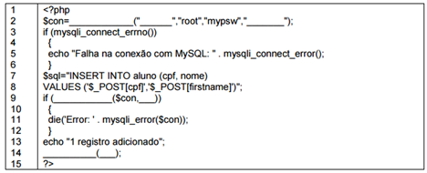

Exercicio: DESENV. WEB EM HTML5, CSS, JAVASCRIPT E PHP
Dentre as alternativas a seguir, assinale a que NÃO se aplica ao conceito de Design Responsivo:
Analise o seguinte código escrito na linguagem JavaScript:
var frutas = new Array("banana", "laranja", "limão");
frutas.shift();
frutas.splice(1, 1, "uva");
for (var i = 0; i < frutas.length; i++) {
document.write(frutas[i] + " | ");
}
Em um documento HTML, o lugar correto para se declarar folhas de estilo CSS externas é dentro da seção:
(COPESE/2020 - Adaptada) O modelo cliente X servidor é a base do ambiente web e de suas aplicações. Sobre a arquitetura cliente-servidor, marque a opção CORRETA.
(OBJETIVA/2021 - Adaptada) HTML é uma linguagem de marcação que faz uso de tags para estruturar o seu conteúdo. Em uma página HTML, para que é utilizada a tag abaixo?
a> /a>
(FURB/2022) Considere um código HTML 5, o qual está sendo estilizado utilizando CSS 3. Isso posto, você precisa modificar certa propriedade de um grupo de elementos para torná-los animados. Ao encontro disso, do(s) seletor(es) CSS a seguir listado(s), aquele(s) utilizado(s) para especificar um grupo de elementos é/são:
(IDECAN/2023) JavaScript é uma linguagem de programação interpretada estruturada de script muito usada para programação FrontEnd. Selecione o método em JavaScript que remove de um vetor o primeiro elemento e o retorna como resultado.
(FGV/2022 - Adaptada) PHP é uma linguagem server side, gratuita e multiplataforma. Numa página web, um script PHP deve ser localizado entre as tags:
(COPEL/2015 - Adaptada) Com a utilização de CSS, podemos manipular as cores dos elementos HTML. Assinale a alternativa que apresenta apenas padrões válidos para a definição de cores em CSS.
(Colégio Pedro II - 2016 - Colégio Pedro II - Professor - Ciência da Computação)
O código de PHP abaixo insere dados em um banco de dados local MySQL, cujo usuário é root; a senha é mypsw e o nome do banco de dados, bdConcurso.
